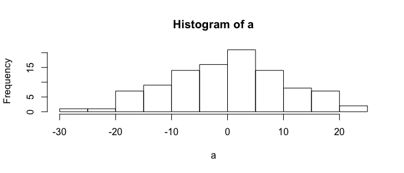

Introduction to R
Download the PDF of the presentation
1 First Steps
This tutorial has been forked from awesome classes developed by Adam Wilson here: http://adamwilson.us/RDataScience/
The R Script associated with this page is available here. Download this file and open it (or copy-paste into a new script) with RStudio so you can follow along.
1.1 Variables
x=1
x## [1] 1We can also assign a vector to a variable:
x=c(5,8,14,91,3,36,14,30)
x## [1] 5 8 14 91 3 36 14 30And do simple arithmetic:
x+2## [1] 7 10 16 93 5 38 16 32Create a new variable called y and set it to 15
y=15Note that R is case sensitive, if you ask for X instead of x, you will get an error
X
Error: object 'X' not found1.1.1 Variable naming conventions
Naming your variables is your business, but there are 5 conventions to be aware of:
- alllowercase: e.g.
adjustcolor - period.separated: e.g.
plot.new - underscore_separated: e.g.
numeric_version - lowerCamelCase: e.g.
addTaskCallback - UpperCamelCase: e.g.
SignatureMethod
2 Subsetting
x## [1] 5 8 14 91 3 36 14 30Subset the vector using x[ ] notation
x[5]## [1] 3You can use a : to quickly generate a sequence:
1:5## [1] 1 2 3 4 5and use that to subset as well:
x[1:5]## [1] 5 8 14 91 33 Using Functions
To calculate the mean, you could do it manually like this
(5+8+14+91+3+36+14+30)/8## [1] 25.125Or use a function:
mean(x)## [1] 25.125Type ?functionname to get the documentation (?mean) or ??"search parameters (??“standard deviation”) to search the documentation. In RStudio, you can also search in the help panel. mean has other arguments too:
mean(x, trim = 0, na.rm = FALSE, ...)
In RStudio, if you press TAB after a function name (such as mean(), it will show function arguments.

Autocomplete screenshot
Calculate the standard deviation of c(3,6,12,89).
y=c(3,6,12,89)
sqrt((sum((y-mean(y))^2))/(length(y)-1))## [1] 41.17038#or
sd(y)## [1] 41.17038#or
sd(c(3,6,12,89))## [1] 41.17038Writing functions in R is pretty easy. Let’s create one to calculate the mean of a vector by getting the sum and length. First think about how to break it down into parts:
x1= sum(x)
x2=length(x)
x1/x2## [1] 25.125Then put it all back together and create a new function called mymean:
mymean=function(f){
sum(f)/length(f)
}
mymean(f=x)## [1] 25.125Confirm it works:
mean(x)## [1] 25.125mymean function?
4 Missing data: dealing with NA values
x3=c(5,8,NA,91,3,NA,14,30,100)mymean(x3) will return?
Calculate the mean using the new function
mymean(x3)## [1] NAUse the built-in function (with and without na.rm=T)
mean(x3)## [1] NAmean(x3,na.rm=T)## [1] 35.85714Writing simple functions is easy, writing robust, reliable functions can be hard…
4.1 Logical values
R also has standard conditional tests to generate TRUE or FALSE values (which also behave as 0s and 1s. These are often useful for filtering data (e.g. identify all values greater than 5). The logical operators are <, <=, >, >=, == for exact equality and != for inequality.
x## [1] 5 8 14 91 3 36 14 30 x3 > 75## [1] FALSE FALSE NA TRUE FALSE NA FALSE FALSE TRUE x3 == 40## [1] FALSE FALSE NA FALSE FALSE NA FALSE FALSE FALSE x3 > 15## [1] FALSE FALSE NA TRUE FALSE NA FALSE TRUE TRUEAnd you can perform operations on those results:
sum(x3>15,na.rm=T)## [1] 3or save the results as variables:
result = x3 > 3
result## [1] TRUE TRUE NA TRUE FALSE NA TRUE TRUE TRUEDefine a function that counts how many values in a vector are less than or equal (<=) to 12.
mycount=function(x){
sum(x<=12)
}Try it:
x3## [1] 5 8 NA 91 3 NA 14 30 100mycount(x3)## [1] NAoops!
mycount=function(x){
sum(x<=12,na.rm=T)
}Try it:
x3## [1] 5 8 NA 91 3 NA 14 30 100mycount(x3)## [1] 3Nice!
5 Generating Data
There are many ways to generate data in R such as sequences:
seq(from=0, to=1, by=0.25)## [1] 0.00 0.25 0.50 0.75 1.00and random numbers that follow a statistical distribution (such as the normal):
a=rnorm(100,mean=0,sd=10)Let’s visualize those values in a histogram:
hist(a)
We’ll cover much more sophisticated graphics later…
6 Data Types
6.1 Matrices
You can also use matrices (2-dimensional arrays of numbers):
y=matrix(1:9,ncol=3)
y## [,1] [,2] [,3]
## [1,] 1 4 7
## [2,] 2 5 8
## [3,] 3 6 9Matrices behave much like vectors:
y+2## [,1] [,2] [,3]
## [1,] 3 6 9
## [2,] 4 7 10
## [3,] 5 8 11and have 2-dimensional indexing:
y[2,3]## [1] 8Create a 3x3 matrix full of random numbers. Hint: rnorm(5) will generate 5 random numbers
matrix(rnorm(9),nrow=3)## [,1] [,2] [,3]
## [1,] -0.6385807 -1.1242050 0.1428754
## [2,] -0.6640297 -0.4913995 0.3565074
## [3,] -0.5751638 0.1669154 0.55996876.2 Data Frames
Data frames are similar to matrices, but more flexible. Matrices must be all the same type (e.g. all numbers), while a data frame can include multiple data types (e.g. text, factors, numbers). Dataframes are commonly used when doing statistical modeling in R.
data = data.frame( x = c(11,12,14),
y = c("a","b","b"),
z = c(T,F,T))
data## x y z
## 1 11 a TRUE
## 2 12 b FALSE
## 3 14 b TRUEYou can subset in several ways
mean(data$x)## [1] 12.33333mean(data[["x"]])## [1] 12.33333mean(data[,1])## [1] 12.333337 Loading Packages
For installed packages: library(packagename).
New packages: install.packages() or use the package manager.
library(raster)R may ask you to choose a CRAN mirror. CRAN is the distributed network of servers that provides access to R’s software. It doesn’t really matter which you chose, but closer ones are likely to be faster. From RStudio, you can select the mirror under Tools→Options or just wait until it asks you.
If you don’t have the packages above, install them in the package manager or by running install.packages("raster").